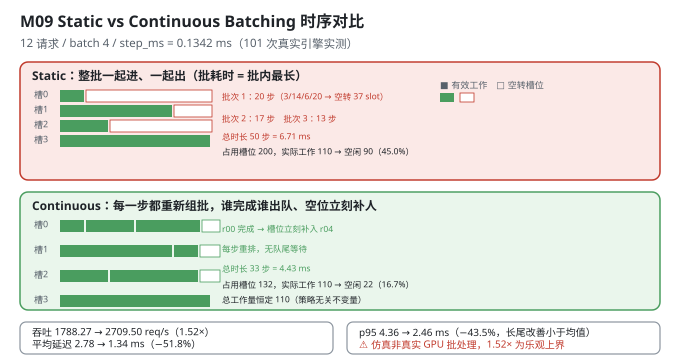
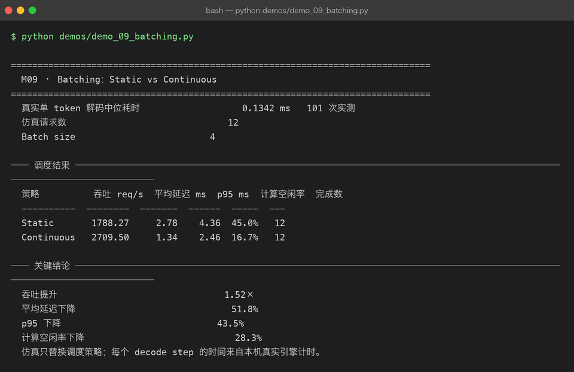

Milestone 09 — Batching：Static vs Continuous
M07 让单次生成快了 2.20×，M08 让单次生成的显存省了 71.9%。但服务面对的不是一次请求，而是一股持续到达的请求流。
朴素做法（Static Batching）：攒够 batch_size 个请求，一起跑，等批里最长的那个生成完，整批一起返回，再攒下一批。
问题显而易见：批里有一个要生成 20 个 token 的请求，另外三个只要 2~6 个 —— 那三个的槽位在剩下的 14~18 步里全部空转，而新到的请求只能在队列里干等。
Continuous Batching（也叫 iteration-level scheduling）的解法：每一步都重新组批。谁生成完了就立刻出队，空出的槽位马上补一个等待中的请求进来。
纯 numpy + 离散事件仿真：src/ie/batching.py 不碰 GPU，只用事件推进时间。但每个 decode step 的耗时来自本机真实引擎的 101 次实测（M07 那个引擎）。
1. Why：为什么静态批处理会浪费一半算力
核心矛盾是：同一个批里的请求，生成长度差异很大。
静态批处理的批耗时 = max(批内 token 数)，而实际工作量 = sum(批内 token 数)。两者的差就是浪费。而且这个浪费是乘法级的：批越大、长度方差越大，浪费越猛。
Continuous Batching 在每个 decode step 后重新组批，槽位一空就补人。它消除的是两类等待：
- 队尾等待（head-of-line blocking）：短请求被长请求堵在批里；
- 槽位空转：短请求完成后，它的槽位在批结束前一直是空的。
2. Design：两个离散事件仿真 + 一个统一口径
@dataclass(frozen=True)
class Request:
request_id: str
arrival_ms: float
tokens: int # 该请求需要生成多少 token两个仿真器共享同一套报告口径（_report），这是可比性的关键：
| 量 | 定义 |
|---|---|
busy_slots | 真正处理了的 token-step 数（总工作量，两种策略相同） |
capacity_slots | 批占用的槽位 × 步数（策略不同，这是唯一变量） |
compute_idle_rate | 1 − busy / capacity |
mean/p95_latency | 完成时刻 − 到达时刻 |
simulate_static：按到达排序后每batch_size个一组；start = max(上一批结束, 批内最晚到达)；批耗时 = 批内最大 token 数；capacity_slots += batch_steps * batch_size。simulate_continuous：维护active列表；每步让所有活跃请求前进 1 token，remaining == 0的出队；只要len(active) < batch_size就从pending补人；capacity_slots += batch_size（每步都按满槽计）。
时间单位用真实的 step_ms：arrival_ms 由"到达序号 × step_ms"构造，所以到达节奏与解码速度挂钩 —— 这是让仿真有意义的前提（如果到达间隔与 step 无关，仿真就退化成纯数学题）。

3. Real-run evidence（来自 demos/out/demo_09_batching_terminal.txt）
step_ms 来自本机真实引擎：M07 的 CausalLMWithKVCache.decode_step，101 次实测取中位数 = 0.1342 ms。
12 个请求，batch_size=4，token 数 [3,14,6,20,5,11,2,17,8,4,13,7]，到达序号 [0,0,0,0,2,4,7,10,12,15,18,21]（× step_ms）。
真实单 token 解码中位耗时 0.1342 ms 101 次实测
仿真请求数 12
Batch size 4── 调度结果 ──────────────────────────────────────────────────────
策略 吞吐 req/s 平均延迟 ms p95 ms 计算空闲率 完成数
---------- -------- ------- ------ ----- ---
Static 1788.27 2.78 4.36 45.0% 12
Continuous 2709.50 1.34 2.46 16.7% 12
── 关键结论 ──────────────────────────────────────────────────────
吞吐提升 1.52×
平均延迟下降 51.8%
p95 下降 43.5%
计算空闲率下降 28.3%把"计算空闲率"拆开（按源码口径还原）：
| 策略 | 总工作量 busy_slots | 占用槽位 capacity_slots | 空闲 |
|---|---|---|---|
| Static | 110（12 个请求共 110 token） | 3 批 × 4 槽 × (20+17+13) 步 = 200 | 90 → 45.0% |
| Continuous | 110（同一个工作量） | 33 步 × 4 槽 = 132 | 22 → 16.7% |
这张表就是整个 M09 的答案：两种策略做的功完全一样（110 个 token-step），区别只在于占用了多少槽位 —— Static 用 200 个，Continuous 用 132 个。省下的 68 个槽位直接变成吞吐。
四个读数：
- 吞吐 1788.27 → 2709.50 req/s（1.52×）。等价于总时长从 50 个 decode step 压到 33 个。
- 平均延迟 2.78 → 1.34 ms（−51.8%）：队列等待几乎被消除。
- p95 4.36 → 2.46 ms（−43.5%）：长尾改善幅度小于均值（见 4.2）。
- 计算空闲率 45.0% → 16.7%（降 28.3 个百分点）：接近一半的算力从"空转"变成了"干活"。
- 两者完成数都是 12，没有请求被丢弃 —— 提升来自调度效率，不是靠丢请求。

4. 踩坑 / 反直觉发现
4.1 ⚠ 这是离散事件仿真，不是真实 GPU 批处理 —— 而且 1.52× 是乐观上界
必须诚实标注三层：
- 批处理本身没有并行：仿真假设"一个 decode step 可以同时推进
batch_size个请求，且耗时仍是step_ms"。这个假设在 GPU 上近似成立（解码是内存带宽瓶颈，批内合并读权重几乎免费），在 CPU 上不成立（CPU 上 batch=4 的耗时大约是 batch=1 的 2~4 倍）。 step_ms是真实的（101 次实测 0.1342 ms），但它是单请求的耗时。仿真把它当作"批内共享的一步"的耗时。- 真实 GPU 上，batch 增大时单步耗时会亚线性增长（不是完全免费）。所以1.52× 是"批内完全免费"假设下的上界，真实收益会低于它。
demo 的结论行写得很清楚：
仿真只替换调度策略；每个 decode step 的时间来自本机真实引擎计时。可迁移的经验：仿真结论必须写清"哪个量是实测、哪个量是假设"。 本章实测的只有
step_ms；调度结果全是仿真产物。
4.2 p95 只降 43.5%，比均值的 51.8% 少 —— 这是机制决定的，不是噪声
Continuous Batching 消除的是等待，而等待对短请求伤害最大（它们在 Static 里被长请求堵在批里，白白等 14~18 步）。所以均值（被短请求拉低）改善巨大。
但 p95 对应的是最长的那几个请求（20、17、13 个 token）。它们的延迟下限就是"自己的 token 数 × step_ms" —— 这部分无论如何优化都减不掉。Continuous 只能帮它们省掉"排队等上一批"，省不掉"自己要生成 20 步"。
实测数字印证：p95 从 4.36 降到 2.46 ms，而最长请求的理论下限是 20 × 0.1342 = 2.684 ms—— p95 已经贴到理论下限附近了，往下降无可降。
这条对容量规划很实用：Continuous Batching 主要改善的是短请求的体验（均值、P50），对长请求的绝对延迟改善有限。 要压 p99 得靠别的手段（投机解码、模型切分、更快的 kernel）。
4.3 "总工作量恒定"是这套仿真最有用的自检
busy_slots 在两种策略下都必须是 110（12 个请求共 110 个 token，每个都要被处理一次）。
这个恒等式很有价值：它把"策略差异"完全隔离到 capacity_slots 这一个变量上。如果哪天两个仿真的 busy_slots 不相等，说明某个请求被漏处理了 —— 仿真写错了。
这个思路和 M08 的"池守恒 8+24=32"、M06 的"FP64 基线 == M01 PPL"是同一类：找一个"策略无关的不变量"，用它来证明比较是公平的。
4.4 到达节奏必须用 step_ms 缩放，否则仿真没有意义
arrivals = [0, 0, 0, 0, 2, 4, 7, 10, 12, 15, 18, 21]
requests = [Request(f"r{i:02d}", arrival * step_ms, tokens) for ...]如果直接用"0, 2, 4, 7... 毫秒"当到达时间，而 step_ms = 0.1342 ms，那么所有请求在第 1 步之前就全到了 —— 仿真退化成"一次性处理 12 个请求"，Continuous 的优势会消失（没有"边到达边调度"这回事）。
乘上 step_ms 之后，到达间隔变成 2~3 个 decode step，才真实复现"边到边调度"的场景。
可迁移的经验：仿真里的所有时间量必须同一量纲、且相对尺度要合理。 到达率与处理率的比值（这里约 12 个请求 / 50 步）决定了队列是否形成，也就决定了调度策略有没有发挥空间。
4.5 capacity_slots 的定义必须两策略一致，否则空闲率不可比
两个仿真对"槽位"的定义是一致的：一个"槽位"= 一个批位置 × 一个 decode step。
- Static：
capacity_slots += batch_steps * batch_size（批内所有位置，按批耗时计） - Continuous：
capacity_slots += batch_size（每步都按满槽计，空着的也算）
两者都把"空着的槽位"算进分母 —— 这正是"空闲率"要衡量的东西。如果 Continuous 只算"实际活跃的请求数"，它的 capacity 就会等于 busy，空闲率恒为 0，指标就失去了意义。
这类"分母口径"的坑在 M02（忠实度）、M04（去重复）已经出现过两次，本章是第三次：看到一个比值指标，先确认分母在两组之间定义一致。
5. Conclusion
- Static Batching 的浪费来自"批耗时 = 批内最长请求"与"实际工作量 = 批内 token 之和"的差；Continuous Batching 每步重新组批，槽位一空就补人。
- 实测仿真（12 请求 / batch 4 /
step_ms = 0.1342 ms来自 101 次真实引擎计时）：吞吐 1788.27 → 2709.50 req/s（1.52×）、平均延迟 2.78 → 1.34 ms（−51.8%）、p95 4.36 → 2.46 ms（−43.5%）、计算空闲率 45.0% → 16.7%（降 28.3 个百分点），两者完成数都是 12。 - 核心拆解：总工作量恒为 110 token-step；Static 占用 200 槽位（空闲 90），Continuous 占用 132 槽位（空闲 22）—— 省下的 68 个槽位就是吞吐的来源。
- ⚠ 诚实标注：调度结果是离散事件仿真，不是真实 GPU 批处理；只有
step_ms是实测；1.52× 是"批内合并免费"假设下的乐观上界（CPU 上不成立，GPU 上也会亚线性退化）。 - p95 改善（43.5%）小于均值（51.8%）是机制决定的：Continuous 消除的是等待，主要救短请求；长请求的延迟下限是自己的 token 数（最长请求理论下限 2.684 ms，实测 p95 已降到 2.46 ms）。
- "总工作量恒定 110" 是策略无关的不变量 —— 用它证明两个仿真的比较是公平的（与 M08 池守恒、M06 基线对齐同一类思路）。
- 到达间隔必须乘
step_ms缩放，否则请求在第 1 步前全部到达，仿真退化。 capacity_slots在两策略下都把空槽算进分母，否则空闲率失真 —— 第三次遇到"比值指标的分母口径"问题。- 手写实现的意义：因为两个仿真共享同一个
_report，我才能断言"两者 busy 都是 110，唯一变量是 capacity" —— 用现成的排队论库你只会拿到一个平均等待时间，拿不到这个隔离。
6. Code map
| 文件 | 职责 |
|---|---|
src/ie/batching.py | Request（request_id / arrival_ms / tokens）/ _report（统一口径：吞吐 / 均值 / p95 / max / 空闲率 / busy / capacity）/ simulate_static（批耗时 = 批内最长）/ simulate_continuous（每步重排，槽位即补）/ compare_batching（四项增益） |
src/ie/batching.py:54 | capacity_slots += batch_steps * batch_size —— Static 把整批空转槽位计入分母 |
src/ie/batching.py:77 | capacity_slots += batch_size —— Continuous 每步按满槽计（空槽同样计入分母） |
src/ie/engine.py | CausalLMWithKVCache.decode_step：提供 step_ms（M07 引擎，101 次实测中位数） |
demos/demo_09_batching.py | 3 节：真实 step 计时 / 12 请求构造 / 两策略调度结果 |
demos/out/demo_09_batching_terminal.txt | 本章所有数字的来源 |
assets/batching.svg | 本章 Static vs Continuous 时序对比图 |
7. Version line
v0.8 → v0.9，M09 Static vs Continuous Batching 落地。实测仿真（12 请求 / batch 4，step_ms = 0.1342 ms 来自 101 次真实引擎计时）：吞吐 1788.27 → 2709.50 req/s（1.52×）、平均延迟 2.78 → 1.34 ms（−51.8%）、p95 4.36 → 2.46 ms（−43.5%）、计算空闲率 45.0% → 16.7%（降 28.3 个百分点）、完成数均 12；核心拆解为「总工作量恒为 110 token-step，Static 占 200 槽 / Continuous 占 132 槽」。并诚实记录「⚠ 调度结果是离散事件仿真而非真实 GPU 批处理，只有 step_ms 是实测，1.52× 是乐观上界」「p95 改善小于均值是机制决定（长请求延迟下限 = 自身 token 数，最长请求下限 2.684 ms）」「busy 恒定 110 是策略无关不变量，用于证明比较公平」「到达间隔须乘 step_ms 缩放否则仿真退化」「capacity_slots 两策略都把空槽计入分母」。纯 numpy + 标准库，无 vLLM。配图 1 张手写 SVG + 1 张真实终端截图。